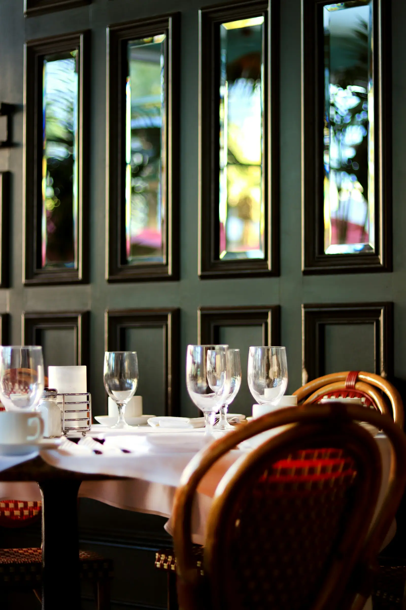
Saisonales Bistro, 3 place de la Gare in Altkirch
Saisonale Küche, zwei Schritte vom Bahnhof
Mittags ein Marktmenü, das jeden Tag wechselt. Abends eine kleine Karte, Weine aus dem Elsass und eine Terrasse unter den Arkaden.
Das Tagesgericht
Mittags von Dienstag bis Freitag, mit einem Kaffee. Der Koch ändert es jeden Morgen über sein Handy.
Die Öffnungszeiten der Woche
| Tag | Mittags | Abends |
|---|---|---|
| Montag | Geschlossen | Geschlossen |
| Dienstag | 12–14 Uhr | 19–22 Uhr |
| Mittwoch | 12–14 Uhr | 19–22 Uhr |
| Donnerstag | 12–14 Uhr | 19–22 Uhr |
| Freitag | 12–14 Uhr | 19–22 Uhr |
| Samstag | Geschlossen | 19–22.30 Uhr |
| Sonntag | 12–14.30 Uhr | Geschlossen |
Reservierung abends und sonntags empfohlen.
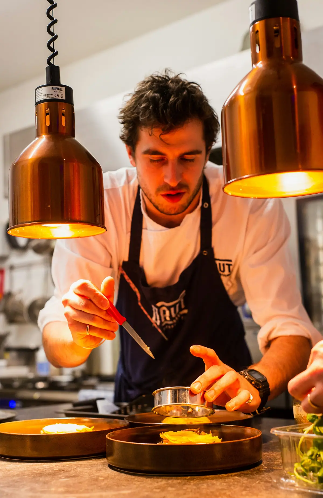
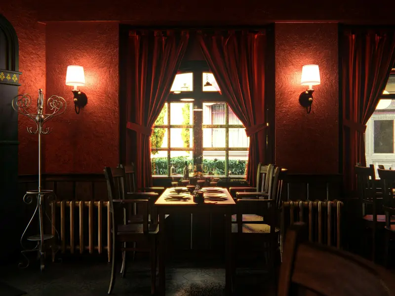
Das Haus
Ein Gastraum mit vierzig Plätzen, grünen Samtbänken und alten Spiegeln, dazu eine Terrasse mit zwanzig Plätzen unter den Arkaden, sobald das Wetter es erlaubt.
In der Küche verarbeitet Thomas Gemüse von Gärtnern aus dem Sundgau, Flussfisch und Fleisch von Züchtern aus der Nachbarschaft. Im Gastraum empfiehlt Ihnen Léa einen Wein aus dem Elsass oder von anderswo. Alles ist hausgemacht, vom Brot bis zum Dessert.
Thomas und Léa Muller

Was wir Ihnen bieten
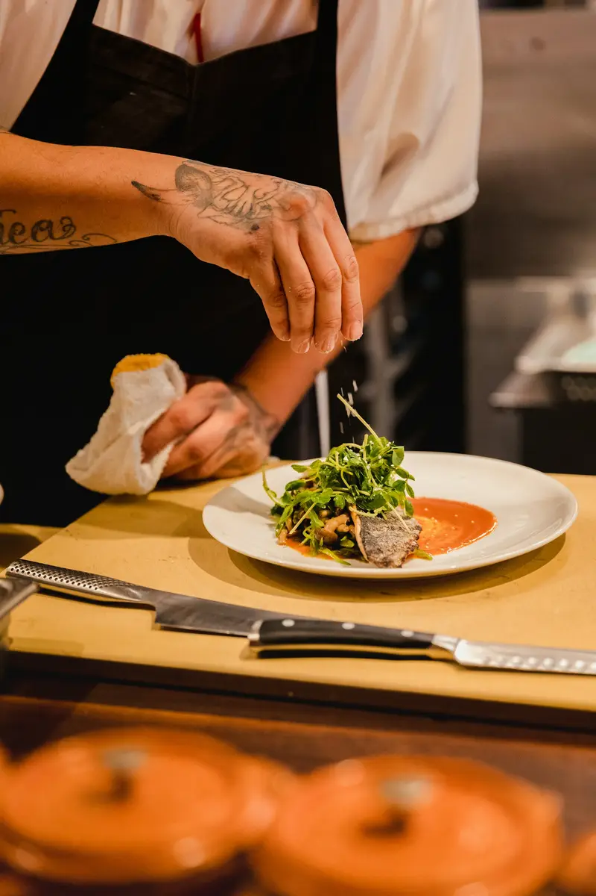
Marktmenü
Vorspeise, Hauptgang und Dessert, mittags unter der Woche, für 21 €.
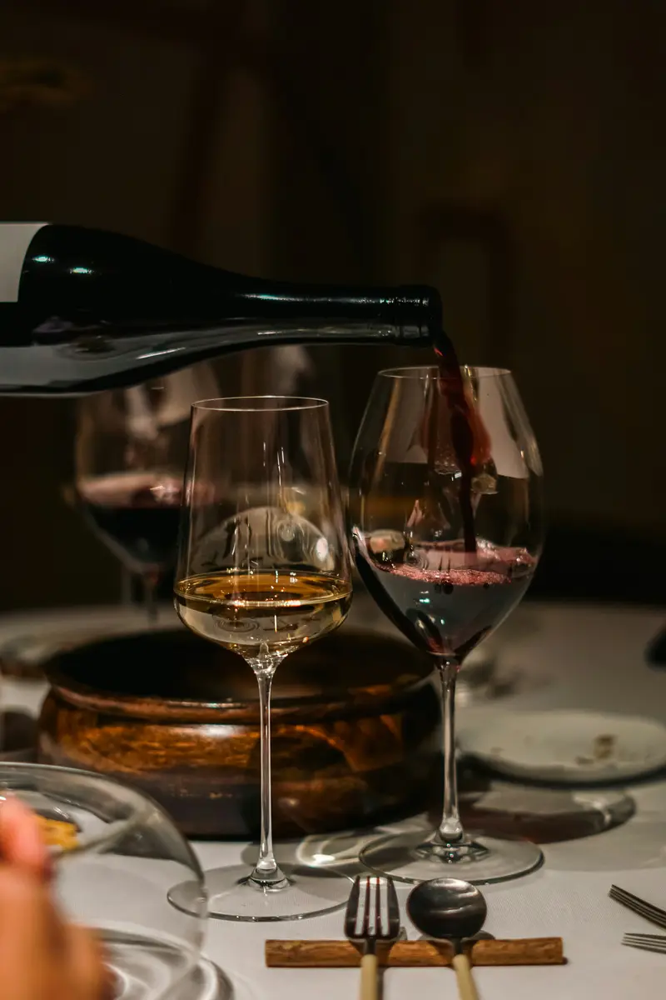
Winzerweine
Rund dreißig Weine aus dem Elsass und von anderswo, auch glasweise.
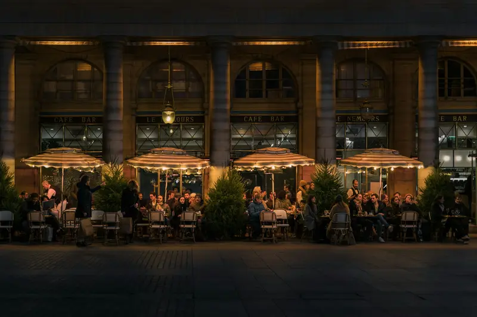
Terrasse
Zwanzig Plätze unter den Arkaden, von April bis Oktober.
In der Küche und im Gastraum
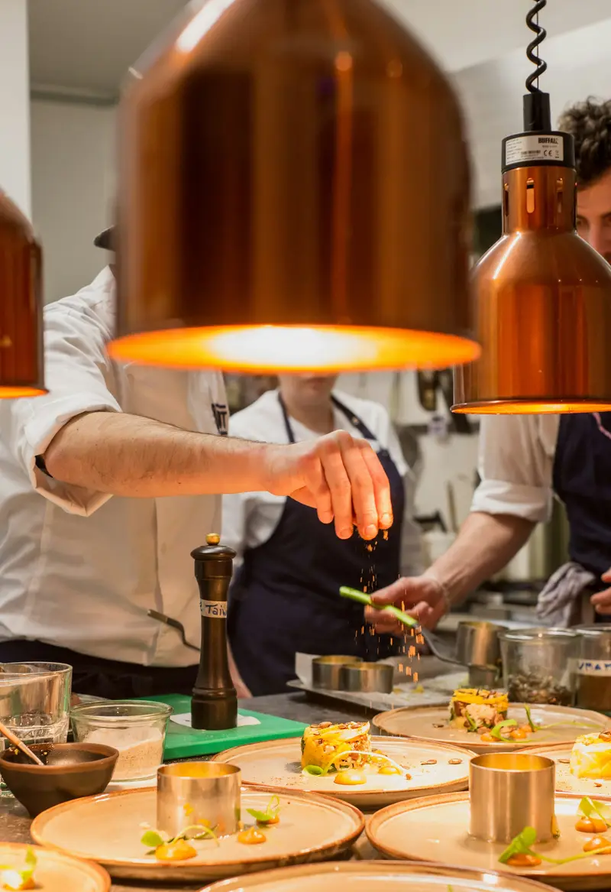
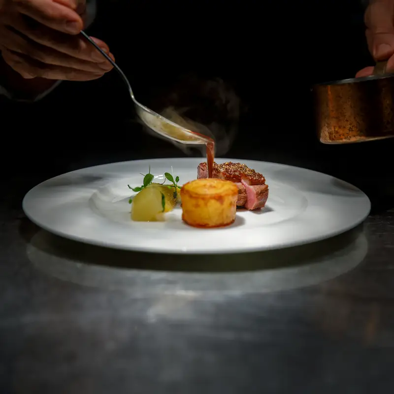
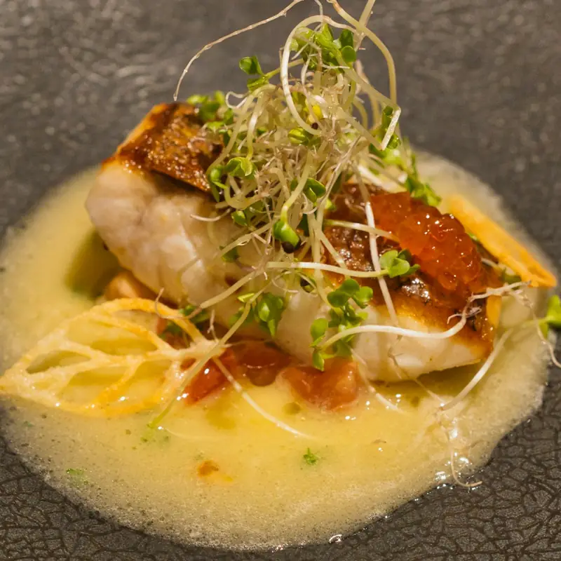
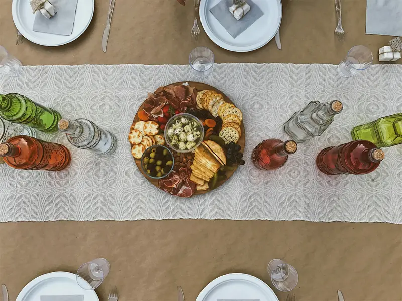
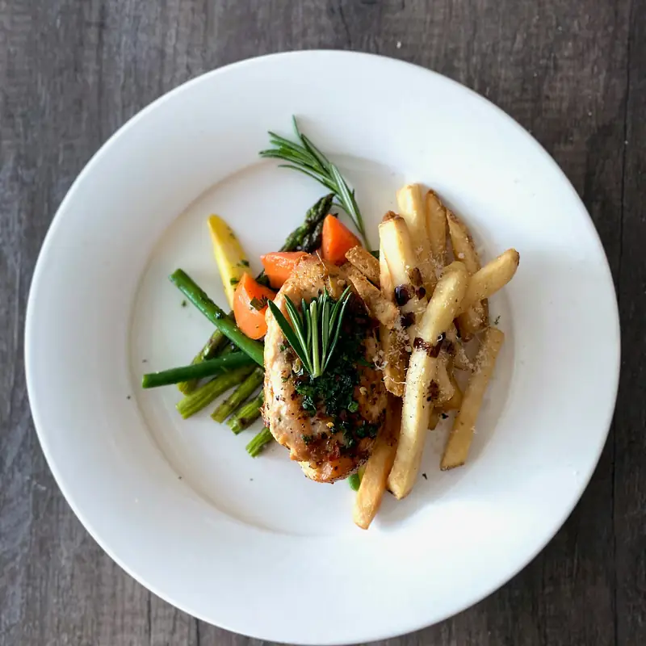
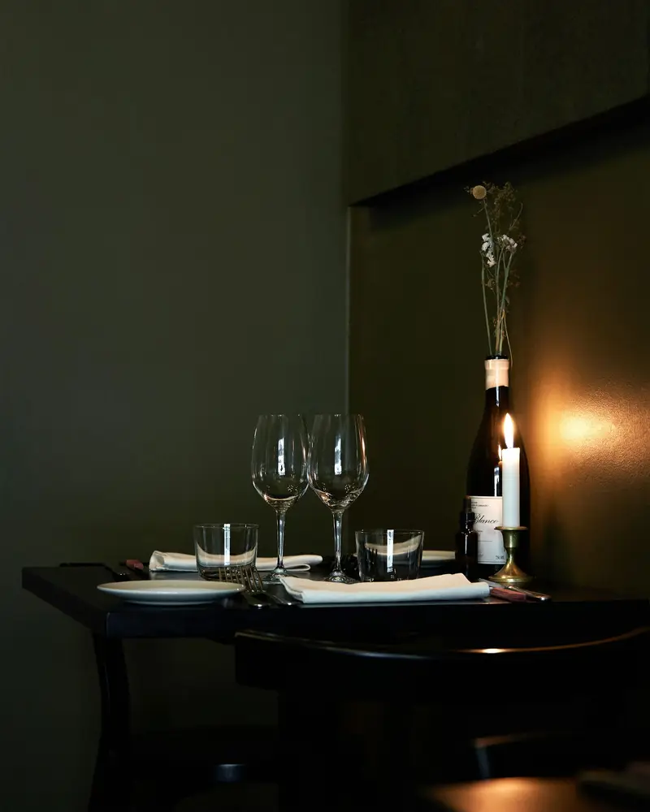
Häufige Fragen
Muss man reservieren?
Abends und sonntags ist es empfehlenswert. Mittags unter der Woche ist oft noch Platz.
Können Sie Gruppen empfangen?
Ja, bis zu 25 Personen, mit einem vorab gemeinsam gewählten Menü. Rufen Sie uns an.
Gibt es vegetarische Gerichte?
Immer mindestens eines, und die Küche passt gern ein Gericht auf Wunsch an.
So finden Sie uns
- 3 place de la Gare
68130 Altkirch - 03 53 01 31 30
- table@petit-wagon.example
- Route